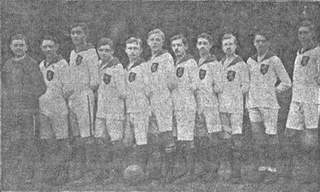

V listopadu roku 1918 se v místnosti pana Rolleho sešla hrstka obětavých sportovních nadšenců. Jednohlasně schválili jméno klubu: Český Lev.
Situace v roce 1918
Rok 1918 byl dobou velkých politických a společenských změn. Po první světové válce se tvořila nová republika — Československá republika. V pohraničních oblastech severních Čech, kde převažovalo německé obyvatelstvo, byla národnostní situace složitá. V Neštěmicích žilo kolem 3000 obyvatel, z nichž většina byla německé národnosti. Česká menšina byla v obci poměrně malá, ale aktivní. Její členové se organizovali v několika spolcích — Sokol, ochotnický divadelní spolek a také v sportovních organizacích.
Sport, zejména kopaná, se v té době teprve prosazoval jako masová zábava. V Rakousku-Uhersku byly sportovní kluby rozšířeny především v Praze, Brně a dalších velkých městech. V Ústí nad Labem působilo několik klubů německé národnosti, ale pro českou menšinu zde neexistovalo sportovní sdružení, v němž by se mohli pravidelně realizovat. Potřeba vlastního českého klubu byla tedy zcela zjevná.
Schůzka v místnosti pana Rolleho
V listopadu roku 1918, krátce po vzniku Československé republiky, se sešla hrstka obětavých sportovních nadšenců v místnosti pana Rolleho. Pan Rolle byl známým českým hostinským v Neštěmicích a jeho hostinec byl oblíbeným místem setkávání české menšiny. Schůzka nebyla nijak velká — podle pamětníků se jí zúčastnilo zhruba 15 až 20 lidí, většinou mladých mužů, kteří se zajímali o sport a hlavně o kopanou.
Hlavním iniciátorem byl pan František Hájek, který se osvědčil jako aktivní člen české komunity. S ním spolupracovali další nadšenci, jejichž jména si bohužel nezachovaly všechna. V protokolu ze schůzky, který se zachoval v archivu klubu, jsou uvedena jména: Hájek František, Doubek Karel, Malý Josef, Novotný Antonín, Holub Jaroslav a další. Byla to většinou mladá generace, která se chtěla sdružit kolem sportu a české kultury.
Jednohlasné schválení jména
Prvním bodem schůzky bylo stanovení jména klubu. Po krátké diskuzi bylo jednohlasně schváleno jméno Český Lev. Toto jméno odráželo vlasteneckého ducha doby a také odkazovalo na český státní znak — dvouocasého lva. Pojmenování klubu bylo symbolické a důležité hlavně pro českou menšinu, která se v tomto období národnostně vymezovala vůči německému obyvatelstvu. Volba jména tak měla i politický rozměr a byla vyjádřením národnostního sebevědomí.
Jakmile bylo schváleno jméno, přešlo se k volbě představenstva. Prvním předsedou klubu byl zvolen pan František Hájek, jednatelem pan Karel Doubek a pokladníkem pan Josef Malý. Dále bylo zvoleno pětičlenné představenstvo, které mělo za úkol řídit běžný chod klubu. Byla také schválena stanovy klubu, které se rodily přímo na místě a vycházely ze stanov jiných podobných klubů v okolí. Stanovy byly později schváleny na místním úřadě.
První kroky klubu

Po formálním založení klubu bylo potřeba vyřešit praktické otázky. Největším problémem bylo získat vhodné hřiště pro provozování kopané. V Neštěmicích v té době nebylo žádné oficiální sportovní hřiště. Fotbalová utkání se odehrávala na různých loukách a polích, které poskytli majitelé pozemků. Tento stav byl pochopitelně velmi nevyhovující a pro nově založený klub to byla jedna z hlavních výzev.
Druhou významnou otázkou byl nábor hráčů. Mimo zakládajících členů bylo potřeba získat další mladé muže, kteří by byli ochotni a schopni hrát fotbal. V prvních měsících bylo získáno celkem 25 aktivních hráčů, což se na poměry té doby dalo považovat za úspěch. Dále byla potřeba výstroj — dresy, kopačky, míče. Vše muselo být pořízeno z vlastních prostředků, protože klub neměl žádné sponzory ani dotace.
První mecenáši
Velkou pomoc v prvních měsících poskytli mecenáši z řad české menšiny. Jmenovitě pan Josef Veselý, který byl majitelem obchodu v Neštěmicích, věnoval klubu finanční dar na nákup prvních dresů. Klub pak přijal za své klubové barvy červenou a bílou — barvy české zemské vlajky. Dresy byly jednoduché, z bavlněné látky, ale pro hráče znamenaly velký krok vpřed.
Pan hostinský Rolle dále poskytl klubu zdarma místnost ve svém hostinci pro pořádání schůzí a jednání. Stal se tak neformálním sídlem klubu a v jeho místnosti se pořádaly všechny důležité události — schůze představenstva, valné hromady, ale také přátelské posezení po zápasech. Tento hostinec se stal jakousi pevností české menšiny a klubovým prostředím, ve kterém se rodila sportovní tradice Neštěmic.
Začátek sportovní činnosti
Na konci roku 1918 se začala rozvíjet sportovní činnost. První zápasy byly pouze přátelské a hrálo se na různých loukách v okolí. První oficiální zápas se odehrál až na jaře 1919, kdy se klub utkal s podobně založeným klubem z Krásného Března. Zápas skončil nerozhodně 2:2 a byl považován za první milník klubu. Hráči se na něj připravovali s velkým nadšením a mnozí z nich vzpomínají na toto utkání jako na jeden z nejkrásnějších dnů svého života.
Tím bylo odstartováno sportovní působení Českého Lva Neštěmice, které pokračovalo s přestávkami až do dnešních dnů. Klub se stal neodmyslitelnou součástí života Neštěmic a pro českou menšinu v té době představoval důležitý kus vlastní identity a národnostního sebevědomí.